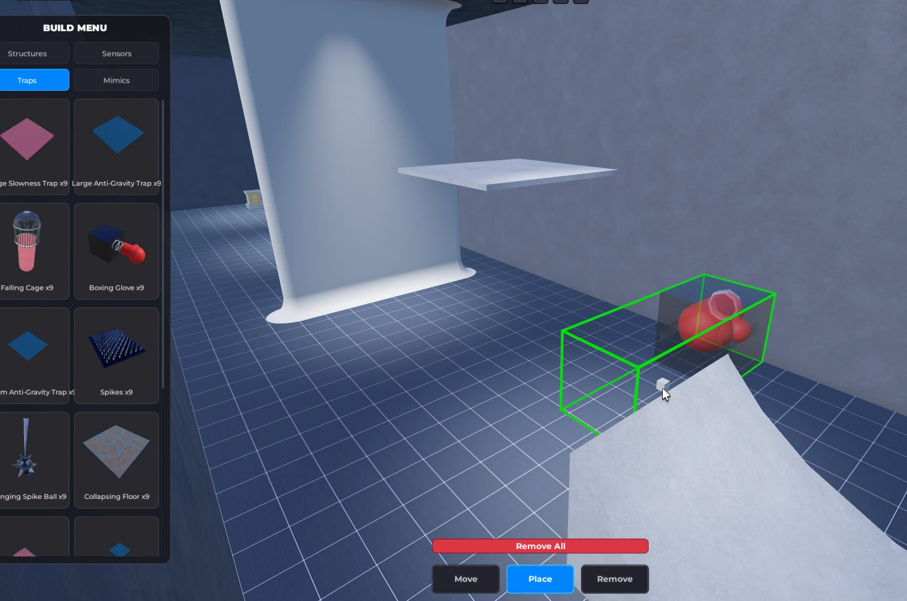
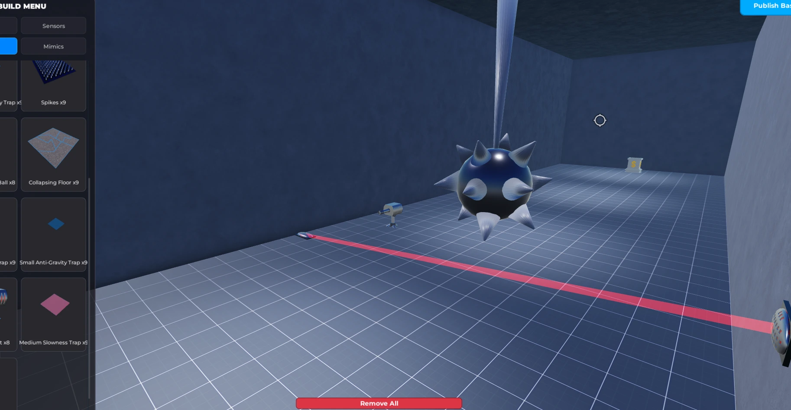
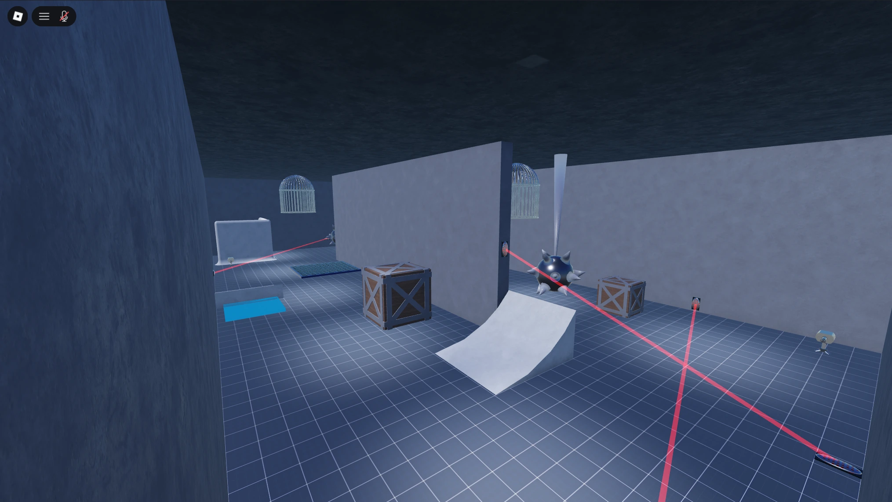
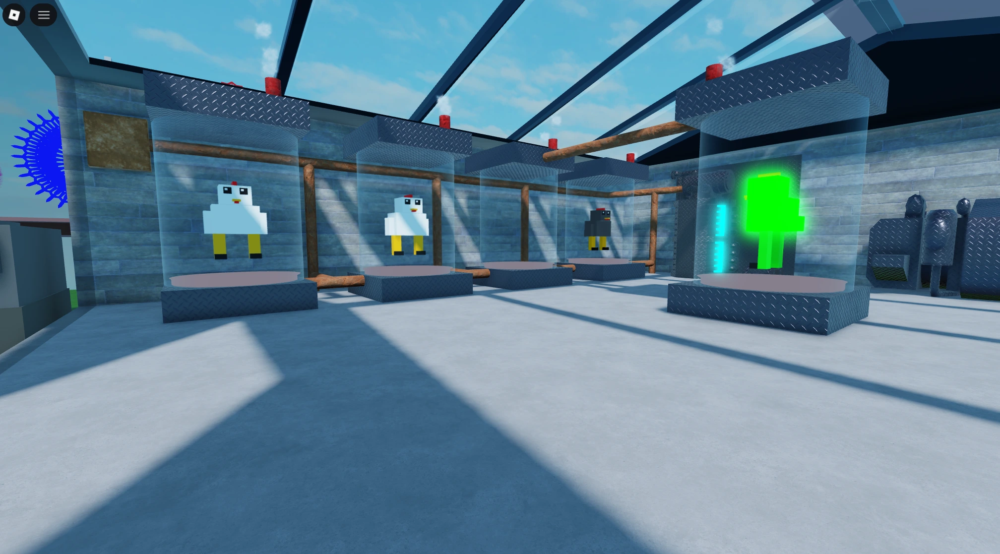

I build secure backend frameworks and responsive frontend systems—taking games from prototype to published.
Hey, I'm inkiei, a Full-Stack Roblox Scripter. I started programming about two years ago and have spent the last year also working with Roblox Studio. Because I write both front-end and back-end code, I can build complete systems from scratch. I have experience with community standards like ProfileStore and ReplicaService for rock-solid data management, and I build strict server verification to stop exploiters.
During my recent professional studio internship, I honed my ability to design complex gameplay systems and solve difficult logic bugs. I learned the value of taking a step back to systematically analyze raw data to find the root cause of a problem, rather than just guessing.
I thrive in collaborative environments. Over the past year, I have worked closely alongside a network of fellow developers and creators on multiple published and in-development projects. Whether I am consulting on a project or building systems from the ground up, I place a massive emphasis on client feedback. For me, delivering clean code and building long-term trust is just as important as the game mechanics themselves.
A complete player controller and inventory built from scratch alongside two fellow developers. It features a drag-and-drop UI, remappable hotbar keybinds, and secure DataStore saving. I also scripted custom movement mechanics, including smooth sprinting and double jumping.



Players can purchase items, defensive traps, and structures to fully customize their own vaults. The core is a robust grid-snapping placement system with strict server-side collision checks to prevent wall-clipping and overlapping, paired with a custom free-cam for easier base building.

An RNG-based gameplay loop where players collect randomly spawned DNA to process in a hatchery. It relies on secure server-synced timers and calculated mutation probabilities. Successfully hatched items are displayed in cases that generate passive income for the player.
Engineered custom NPC AI with dynamic pathfinding that actively detects and pursues players across complex map geometry. Focused heavily on loop optimization to recalculate paths efficiently without causing server lag or memory leaks.